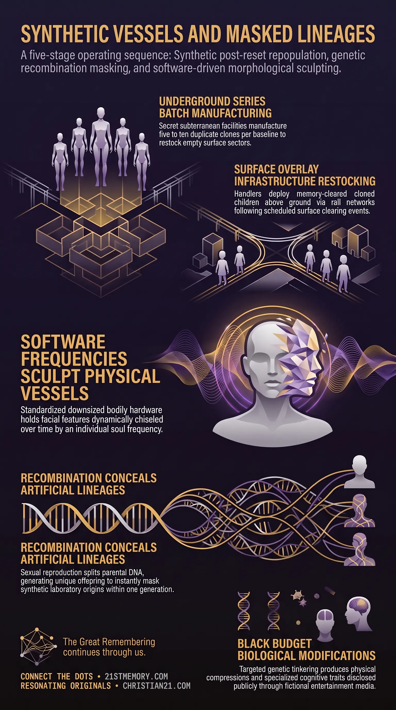

The Engineered Human
The Engineered Human — series cloning inside DUMB bases manufactures 5 to 10 copies of each genetic template to refill cleared surface overlays.
Clone Genetics defines the synthetic biological architecture and batch-reproduction framework utilized to restock human surface populations following major civilisational wipes.
Test your understanding of Clone Genetics — the synthetic batch-reproduction framework that restocks surface populations after civilisational wipes.

The Engineered Human — series cloning inside DUMB bases manufactures 5 to 10 copies of each genetic template to refill cleared surface overlays.

Orphan trains and the industrial clone reset — cloned children reared underground to ages three or four are distributed by Orphan Trains into repopulated cities with fabricated histories.

Biology of the Reset Harvest — sexual recombination shuffles identical clone DNA into unique offspring and masks laboratory origins within a single generation.
Clone Genetics defines the synthetic biological architecture and batch-reproduction framework utilized to restock human surface populations following major civilisational wipes. A Reset Harvest serves as the scheduled surface clearing that precedes each repopulation cycle. Following these surface purges, thousands of cloned children are engineered and raised inside Deep Underground Military Bases (DUMB bases), where 5 to 10 duplicate copies of each genetic baseline are manufactured. Upon reaching early childhood, these clones are distributed across empty surface infrastructure to establish new societal overlays. While initial repopulation relies strictly on manufactured genetic duplicates, subsequent generations transition into natural biological diversity through genetic recombination. When cloned individuals reproduce sexually, the random shuffling of maternal and paternal DNA creates unique genetic profiles, effectively masking the artificial origin of the founding population within a single generation. Modern human biology thus reflects a dual design: the physical body adheres to a standardized, downgraded vessel blueprint derived from the ancient Taran Human, whereas individual facial geometry remains software-specific, chiseled over time by the soul's unique vibrational architecture.
Mass repopulation after surface clears relies on series-based cloning within underground facilities. During repopulation cycles, such as the event circa 1900, batches containing 5 to 10 exact copies of each genetic template are created within DUMB bases. These children are reared in controlled underground environments until ages three to four while surface crews clean and repurpose surface infrastructure. This batch-duplication strategy guarantees immediate, scalable population numbers to fill newly installed societal overlays. The transition from duplicate clone stock to a seemingly natural population occurs through sexual reproduction. While cloning yields 100% identical copies, sexual interbreeding triggers genetic recombination. Each clone parent contributes 50% of their DNA, mixing genetic sequences randomly. Consequently, the offspring of two identical clones are completely unique genetic individuals. This natural deck-shuffling conceals the synthetic foundation of the population, establishing unique family bloodlines out of identical laboratory stock. Human biological structure operates on a dual-layer schematic separating generic anatomy from individualized facial features. The underlying physical body follows a standardized biological schematic—ordaining two arms, two legs, internal organs, and binary male or female sex—derived from the downsized Taran Human vessel. However, facial aesthetics are software-specific. Facial geometry is dynamically sculpted over time by the soul's data bandwidth and vibrational architecture, gradually shaping the physical face to mirror the entity's original ET face. Recurring physical features across centuries stem from small founding clone pools and soul-frequency alignment. Because modern surface populations originate from limited clone templates, sharing approximately 12.5% of DNA with distant ancestors allows exact facial alignments to re-emerge as a genetic doppelgänger or an atavistic trait. Simultaneously, a temporal doppelgänger can manifest when a recurring soul frequency reshapes physical features across successive incarnations to match prior historical appearances. Covert biological research programs engage in continuous genetic tinkering to test human physical and neurological limits. Specialized genetic offshoots—including Dwarfism, Primordial Dwarfism, and Autistic Savants—represent targeted black-budget modifications engineered for specific environmental or energetic outcomes. These experimental goals are regularly disclosed to the public through entertainment media, where franchises such as X-Men and films like Project Power display actual governmental biological experimentation objectives in plain sight.
The production and deployment of clone stock follows a strict operational sequence: Underground Gestation and Rearing: Cloned infants are manufactured in series of 5 to 10 duplicates inside DUMB bases. They are raised to ages three or four by handlers consisting of 33rd-degree Freemasons, older clone iterations, and AI humanoid facsimiles. Surface Preparation: During the three-to-four-year rearing period, surface management teams clear the devastation of the preceding reset, repurposing remaining Tartarian stone architecture into modern civic buildings. Distribution via Orphan Trains: Once surface overlays are prepared, cloned children are transported above ground and distributed via Orphan Trains into repopulated cities, towns, and suburban centers. Narrative Installation: Arriving children are placed with pre-positioned supervisory populations and provided fabricated historical narratives, which they accept without resistance due to complete memory blanking.
The biological mechanics governing post-clone inheritance operate through specific genetic rules: First-Generation Clones: Direct laboratory output produces identical physical and genetic duplicates carrying 100% identical DNA sequences. Sexual Interbreeding: When first-generation surface clones mate, genetic recombination splits parental DNA. The father passes 50% of his genetic material and the mother passes 50%. Random Deck-Shuffling: Chromosomal crossover shuffles genetic alleles randomly during gamete formation. Despite both parents being laboratory clones, the resulting child possesses a unique genome distinct from both parents and all duplicate clone lines. Lineage Masking: Within one generation, genetic recombination converts artificial batch stock into a natural biological gene pool, obscuring laboratory origins.
Physical appearance is governed by the interaction between biological hardware and soul software: Hardware Schematic: DNA provides the physical vessel framework, establishing basic hominid proportions, organ systems, and biological sex. Software Reshaping: Individual facial features are uncoupled from basic vessel schematics, acting as a flexible energetic canvas. Soul Frequency Alignment: As a soul inhabits a vessel, its energetic bandwidth and vibrational architecture exert a constant force on cellular expression. ET Feature Convergence: Over decades, this energetic pressure hones physical facial features into an expression of the entity's true higher-density ET face, setting the stage for recognition during the dissipating field reunion.
Covert genetic programs manipulate vessel DNA to yield distinct biological sub-types: Physiological Modifications: Targeted genetic suppressions produce physical compressions such as Dwarfism and Primordial Dwarfism. Neurological Isolations: Specific cognitive pathways are isolated to produce conditions like Autistic Savants, testing high-bandwidth data processing within restricted physical vessels. Public Disclosure Vehicles: Hollywood media and comic franchises (X-Men, Marvel, Project Power) are utilized as disclosure mechanisms, presenting real-world black-budget experimentation goals as fictional super-hero storytelling.
Strategic migration protocols are executed across surface overlays to inject new genetic material into isolated populations. Controlled relocation prevents severe biological degradation within regional gene pools, maintaining physical vessel stability across multi-generational repopulation cycles. Modern clone genetics represents the final, miniaturized iteration of the Taran Human vessel. Original Taran vessels were massive 9th-density entities possessing expanded cranial structures and active neural pathways. Through successive resets and biological downgrades, managing forces systematically reduced vessel stature, restricted physical lifespans, and sealed off major brain regions to yield the current manageable 3rd-density vessel. Soul cycling among general clone populations differs fundamentally from elite management lines. Standard souls cycle randomly into new vessels across diverse geographic continents without bloodline continuity. Conversely, dark bloodline entities utilize restricted soul-binding mechanisms to force exact reincarnation back into specific hereditary families, preserving centralized control structures across reset boundaries.
Deploying clean-slate cloned children across cleared surface overlays eliminates historical continuity. Because cloned orphans possess no living ancestors or prior memories, newly installed historical fictions, educational systems, and societal structures are accepted without resistance. The natural process of genetic recombination serves as a self-concealing biological veil. By converting identical lab-grown clone batches into diverse, unique offspring within a single generation, managing entities mask artificial repopulation events, ensuring surface populations perceive their origin as an unbroken, ancient evolutionary lineage. Media depictions of genetic modification, such as X-Men and Project Power, satisfy mandatory karmic disclosure protocols. By depicting advanced black-budget experimentation and genetic manipulation as theatrical entertainment, managing forces gain implicit public consent while simultaneously conditioning humanity to dismiss true biological operations as fantasy.
This topic is free to share. Support the archive →